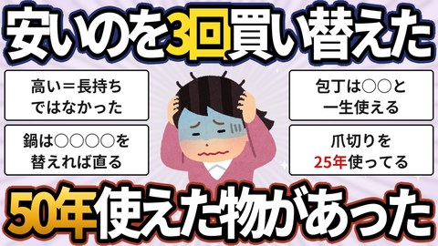
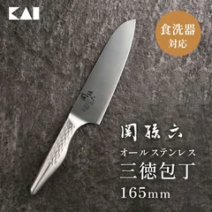
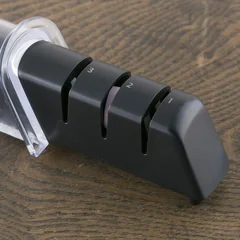
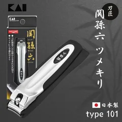
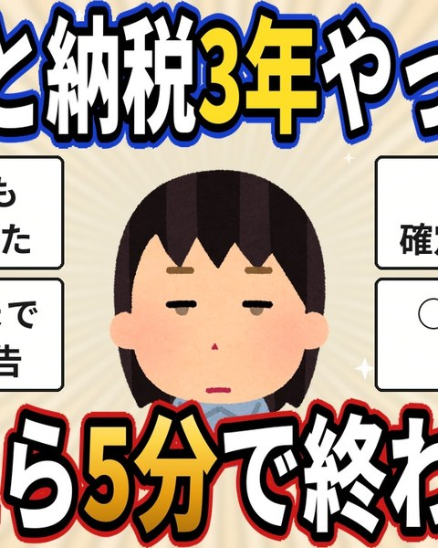
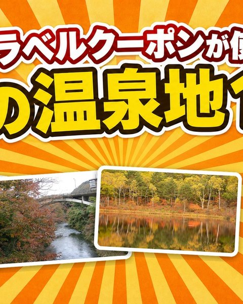
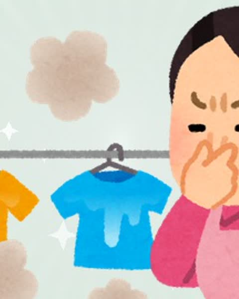
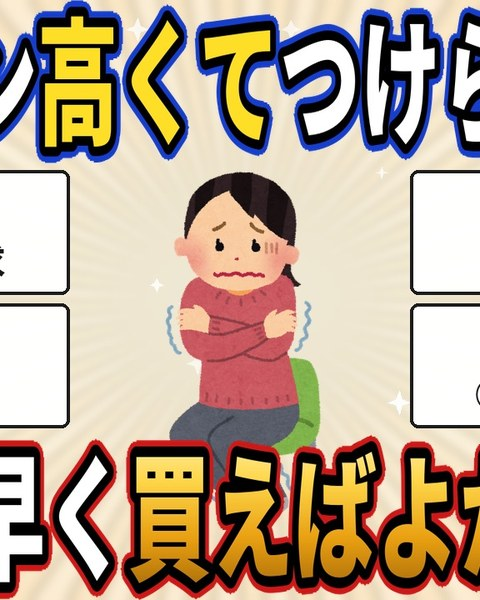

長編


FROM THE LATESTVIDEOS
▶ 最新の動画

CATEGORY
🎁 ふるさと納税

ふるさと納税 / 2026.09.17
ふるさと納税で日用品を頼んだら買い物が減った、神返礼品7選
7品を紹介
紹介したものを見る →
ふるさと納税 / 2026.09.16
ふるさと納税の楽天トラベルクーポンが使える、秋の温泉地12選
12品を紹介
紹介したものを見る →
ふるさと納税 / 2026.09.14
頼んだ人の声が止まらない、ふるさと納税の食べ物21選
21品を紹介
紹介したものを見る →CATEGORY
🧳 旅行・お出かけ

旅行・お出かけ / 2026.09.17
一人でも行きやすかった旅先
10品を紹介
紹介したものを見る →
旅行・お出かけ / 2026.09.16
持って行ってよかった、低評価が少ない旅行の便利グッズ14選
14品を紹介
紹介したものを見る →CATEGORY
🧹 家事・掃除・洗濯

家事・掃除・洗濯 / 2026.09.20
液体から粉に戻した人が、洗濯でずっとリピートしている10品
10品を紹介
紹介したものを見る →
家事・掃除・洗濯 / 2026.09.16
買う前に見て、「ここは気をつけて」の声がある家事グッズ15選
15品を紹介
紹介したものを見る →
家事・掃除・洗濯 / 2026.09.15
迷ったらまずコレ、低評価がほぼない家事ラクグッズ18選
18品を紹介
紹介したものを見る →CATEGORY
🍳 キッチン・料理

LATEST / 暮らしの道具 / 2026.09.20
買い替えずに10年使えている一生モノ11品
11品を紹介
紹介したものを見る →
収納・片付け / 2026.09.20
買ったのに使わなくなった物8つと、そのあとに選んだ6品
6品を紹介
紹介したものを見る →家事・掃除・洗濯 / 2026.09.16
買う前に見て、「ここは気をつけて」の声がある家事グッズ15選
15品を紹介
紹介したものを見る →CATEGORY
🛠️ 暮らしの道具
LATEST / 暮らしの道具 / 2026.09.20
買い替えずに10年使えている一生モノ11品
11品を紹介
紹介したものを見る →CATEGORY
🎒 子育て・朝の支度
家事・掃除・洗濯 / 2026.09.16
買う前に見て、「ここは気をつけて」の声がある家事グッズ15選
15品を紹介
紹介したものを見る →家事・掃除・洗濯 / 2026.09.15
迷ったらまずコレ、低評価がほぼない家事ラクグッズ18選
18品を紹介
紹介したものを見る →CATEGORY
📦 収納・片付け
収納・片付け / 2026.09.20
買ったのに使わなくなった物8つと、そのあとに選んだ6品
6品を紹介
紹介したものを見る →家事・掃除・洗濯 / 2026.09.16
買う前に見て、「ここは気をつけて」の声がある家事グッズ15選
15品を紹介
紹介したものを見る →家事・掃除・洗濯 / 2026.09.15
迷ったらまずコレ、低評価がほぼない家事ラクグッズ18選
18品を紹介
紹介したものを見る →CATEGORY
🍂 季節の備え
LATEST / 暮らしの道具 / 2026.09.20
買い替えずに10年使えている一生モノ11品
11品を紹介
紹介したものを見る →家事・掃除・洗濯 / 2026.09.20
液体から粉に戻した人が、洗濯でずっとリピートしている10品
10品を紹介
紹介したものを見る →
季節の備え / 2026.09.19
エアコンが高くてつけられない冬に、もっと早く買えばよかったもの5つ
5品を紹介
紹介したものを見る →OUR POINT OF VIEW
良かった声も、
気をつけたい声も。
みんなのレビューを読んで、
選ぶときのきっかけになるようにまとめています。
コメントはレビューの要約です。
特定の1人の体験ではありません。